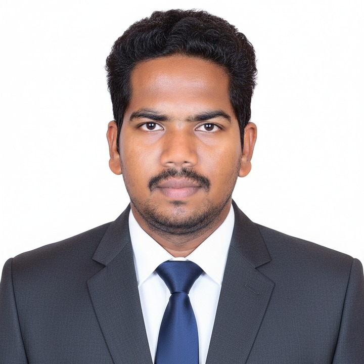

Engineering professional and researcher turning rigorous research into reliable, production-ready solutions across control systems, power electronics, instrumentation, and machine vision. Published in IEEE Transactions on Industrial Electronics.

Engineer · Researcher · Product Development Leader
I am a Ph.D.-qualified engineer with 8+ years of combined industry, research, and academic experience spanning machine vision, control systems, power electronics, instrumentation, and renewable energy.
I currently serve as Assistant Manager – New Product Development (NPD) at Manatec Electronics Pvt. Ltd. Previously, I led the Machine Vision team, developing vision-based inspection and measurement solutions. Earlier, as Lead – Product Development at Lectronic Solutions, I designed instrumentation hardware and calibration tools. My doctoral research focused on nonlinear control and power electronics. I enjoy turning engineering ideas into practical, reliable products.
Ph.D., Electrical Engineering (Control Systems)
Pondicherry University · 2018–2024
Research conducted at Puducherry Technological University (formerly Pondicherry Engineering College)
M.Tech, Instrumentation Engineering
Pondicherry University · 2015–2017 · CGPA 8.19
B.Tech, Electronics & Instrumentation Engg.
Pondicherry University · 2012–2015 · CGPA 6.71
Diploma, Instrumentation & Control Engg.
MN Govt. Polytechnic · 2009–2012 · 83.21%
Power electronics · Renewable energy · Control · Machine vision
Advanced control; power-electronics fault ride-through; renewable energy systems; nonlinear and closed-loop control; machine vision and inspection.
Nonlinear Control for Power-Electronics Systems — research on DC-link stability and power-electronics protection, validated through simulation and hardware.
Vision-based inspection systems (Manatec); tank water-level controller PCB & pressure transmitter + Windows calibration app (Lectronic); Wiener-model nonlinear PI controller for a pH process (M.Tech).
Peer-reviewed journal & conference papers
| All | Since 2021 | |
|---|---|---|
| Citations | — | — |
| h-index | — | — |
| i10-index | — | — |
Auto-updated weekly from Google Scholar · last update —
S. Ramanathan, D. K. Sakthivel, A. N. Ramaiah, S. Ramalingam, “Nonlinear Control Strategy for DC-Link Voltage Regulation During Three-Phase Grid Faults.”
S. Ramanathan et al., “Comparative Study of Indirect Power Control and MPPT Techniques for Renewable Energy Systems.”
S. Ramanathan et al., “Power-Electronics Protection During Symmetrical Voltage Dips.”
B. Hema Kumar, S. Ramanathan, “A Novel Smart Highway Automated Toll Collection System using Raspberry Pi & OpenCV.”
S. Ramanathan, B. Hemakumar, B. Varadharaju, “A Virtual Instrument Approach to Model Jaw Tremor.”
S. Ramanathan, “Wiener-based PI Controller for Strong Acid & Strong Base pH Neutralization Process” (oral presentation).
Faculty development programmes, workshops, training & seminars attended
Orientation / Refresher Programme — Physiological Control & Internet of Medical Things
IoT Applications in Renewable Energy
Design & Recent Development in Renewable-Energy-Based Microgrid Systems
Design & Optimization of EV Charging Technology in Smart-Grid Platform
Energy Engineering
Green Technology & Sustainability Engineering
Nuclear Control & Instrumentation (SPARC-sponsored)
Research Rejuvenation Workshop (TEQIP-III)
Cybersecurity (ICECON-2019 pre-conference workshop)
Advancement in Surgical Instruments & Bio-signal Processing (ICMR-sponsored)
System Identification (NWOSI-2017, TEQIP-III)
Multivariate Data Analysis — Grade A
MEMS Design Tool — IntelliSuite (National Workshop)
System Design using Raspberry Pi
ElectroHarvest'14 — mini-project completion & demonstration
Technical courses developed by Dr. S. Ramanathan · Browse all courses →
Learn the hard parts of control theory by playing with them — live, in-browser simulations you tune with sliders and watch respond instantly. No installs, runs in your browser.
43 interactive modules — beginner to advanced
The core microcontroller peripherals made tangible — tune duty cycle, prescaler, ADC bits, and baud rate and watch the waveforms respond live. Runs entirely in your browser.
6 interactive modules
A professional, industry-oriented course on camera technology & imaging-system selection for machine vision — from photons to production. 22 modules across 7 sections, every concept interactive.
22 modules · 7 sections
The engineering behind medical devices, made tangible — biopotentials, the acquisition chain, sensors, and patient safety. 16 modules across 4 sections, every concept a live in-browser simulation with theory.
16 modules · 4 sections
A hands-on, opinionated course for developers who want to use Claude Code, subagents, MCP servers, and the Claude Agent SDK as serious daily tools. Covers workflow design, customization, automation, and extension — with runnable examples, cheat sheets, quizzes, and a full course book.
Curriculum
A structured 14-module course from absolute beginner to building real-world applications — syntax, data structures, OOP, files, APIs, and databases.
📚 14 Modules · ~130 hours · Capstone projects
A 16-module path from "pixels are just numbers" to real-world computer-vision applications using Python, OpenCV, scikit-image, and NumPy.
📚 16 Modules · ~120 hours · Portfolio projects
A 6-module course from reading a schematic to shipping a working board — components, KiCad design, power & signal integrity, manufacturing, and systems integration.
📚 6 Modules · 24 hours · 56 topic decks · KiCad
Assistant Professor & Guest Faculty experience
I teach and mentor across the following areas, drawing on both research depth and hands-on industry practice:
Open to collaboration, research, and professional connection.